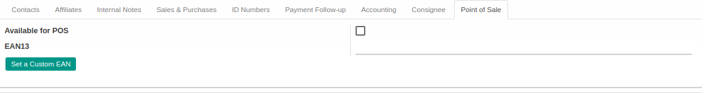

Penjelasan
Informasi pada Individual Partner dibagi menjadi beberapa area, diantaranya:
- Header
- Tab Other Positions
- Tab Internal Notes
- Tab Personal Information
- Tab Sales & Purchases
- Tab ID Numbers
- Tab Payment Follow-up
- Tab Accounting
- Tab Consignee
- Tab Point Of Sale
HEADER
Image

Foto Partner
Name
Nama Partner
Tags
Tags Partner
Smart Button

Tombol-tombol yang berfungsi sebagai Shortcut untuk masuk ke dalam menu yang berkaitan dan juga sebagai pemberi informasi mengenai seberapa banyak data, total, dll
Address
Mendefinisikan alamat. Terbagi atas beberapa isian, yaitu:
- Street: Alamat Partner
- Number: Nomor jalan Partner
- City completion: Informasi kota secara lengkap
- City: Kota dimana Partner berada
- State: Provinsi dimana Partner berada
- Zip: Nomor kode POS Partner
- Country: Negara dimana Partner berada
Local Admin. Unit 1
Mendefinisikan unit administrasi dimana levelnya adalah 1
Local Admin. Unit 2
Mendefinisikan unit administrasi dimana levelnya adalah 2
Local Admin. Unit 3
Mendefinisikan unit administrasi dimana levelnya adalah 3
Website
Alamat website Partner
Job Position
Jabatan Partner
Department
Departement Partner
Phone
Nomor telepon Partner
Mobile
Nomor handphone/mobile Partner
Fax
Nomor fax Partner
Alamat email Partner
Title
Bentuk usaha Partner
Academic Titles
Gelar akademik Partner
Latest Formal Level Education
Pendidikan terakhir Partner
Latest Field of Study
Bidang studi terakhir Partner
GPA
Nilai IPK terakhir Partner
Latest Diploma
Diploma terakhir Partner
TAB OTHER POSITIONS


Image

Foto kontak
Name
Nama kontak
Tags
Tags kontak
Related Company
Mendefinisikan relasi company kontak
Job Position
Posisi/jabatan kontak
Alamat email kontak
Phone
Nomor telepon kontak
Mobile
Nomor handphone/mobile kontak
Use Company Address
Jika dipilih, maka alamat kontak akan menggunakan alamat perusahaan.
Address Type
Tipe alamat. Terbagi atas 5 tipe, yaitu:
- Default: Todo
- Invoice: Todo
- Shipping: Todo
- Contact: Todo
- Other: Todo
TAB INTERNAL NOTES

Internal Notes
Catatan internal terkait Partner
TAB PERSONAL INFORMATION

Birthdate
Tanggal lahir Partner
Nationality
Kebangsaan Partner
Gender
Jenis Kelamin Partner
Ethnicity
Etnis Partner
Religion
Agama Partner
TAB SALES & PURCHASES

Salesperson
Mendefinisikan Salesperson
Sales Team
Mendefinisikan Sales Team
Contact Reference
Referensi Partner
Languange
Mendefinisikan bahasa yang digunakan
Date
Tanggal
Logistic Unit
Mendefinisikan Logistic Unit
Sale Pricelist
Mendefinisikan daftar harga penjualan
Purchase Pricelist
Mendefinisikan daftar harga pembelian
Customer
Jika dipilih, maka Partner akan ditandai sebagai Customer(Pelanggan)
Supplier
Jika dipilih, maka Partner akan ditandai sebagai Supplier(Pemasok)
Active
Sebagai penanda apakah data adalah aktif/non-aktif
Publish
Jika dipilih, maka Partner akan ter-publish pada website
Opt-Out
Jika dipilih, maka Partner tidak akan menerima email untuk Mass Mailing dan Marketing Campaign
Receive Inbox Notifications by Email
Terbagi atas 2 pilihan, yaitu:
- Never: Jika dipilih, Partner tidak akan menerima notifikasi email
- All Messages: Jika dipilih, Partner akan menerima notifikasi email
Customer Location
Mendefinisikan lokasi Customer(Pelanggan)
Customer Promotion Location
Mendefinisikan lokasi Customer Promotion(Promosi Pelanggan)
Supplier Promotion Location
Mendefinisikan lokasi Supplier Promotion(Promosi Pemasok)
Supplier Location
Mendefinisikan lokasi Supplier(Pemasok)
Delivery Method
Mendefinisikan metode pengiriman yang digunakan
TAB ID NUMBERS


Category
Mendefinisikan kategori dari nomor identitas yang akan digunakan
Ex: SIM, KTP
ID Number
Nomor identitas
Issued By
Mendefinisikan siapa yang mengeluarkan nomor identitas
Issued On
Mendefinisikan tanggal identitas dikeluarkan
Place of Issuance
Mendefinisikan tempat diterbitkannya nomor identitas
Valid From
Mendefinisikan tanggal mulai validnya nomor identitas
Valid Until
Mendefinisikan tanggal akhir validnya nomor identitas
Status
Mendefinisikan status identitas. Terbagi atas 4 pilihan, yaitu:
- New: Identitas baru
- Running: Identitas yang sedang berjalan
- To Renew: Identitas perlu diperpanjang
- Expired: Identitas sudah tidak aktif
Notes
Catatan tambahan terkait nomor identitas
TAB PAYMENT FOLLOW-UP
HEADER

Follow-up Responsible
Mendefinisikan User yang akan bertanggung jawab untuk melakukan Follow-up pembayaran
Next Action
Mendefinisikan tanggal tindakan selajutnya beserta catatan terkait tindakan yang akan dilakukan
Customer Payment Promise
Isian untuk janji pembayaran yang diberikan oleh Customer(Pelanggan)
HISTORY

History
Todo
TAB ACCOUNTING
HEADER

Fiscal Position
Terbagi atas 2 pilihan, yaitu:
- Normal Taxes: Todo
- Tax Exempt: Todo
TIN
Mendefiniskan dan melakukan pengecekan terkait nomor identifikasi pajak.
Catatan: TIN(Inggris: Tax Identification Number disingkat TIN)
Account Receivable
Mendefiniskan akun piutang dagang
Customer Payment Term
Mendefiniskan jangka waktu pembayaran Customer(Pelanggan)
Total Receivable
Informasi terkait total piutang
Debt
Informasi terkait hutang
Latest Full Reconciliation Date
Todo
Account Payable
Mendefiniskan akun piutang hutang
Supplier Payment Term
Mendefiniskan jangka waktu pembayaran Supplier(Pemasok)
Total Payable
Informasi terkait total yang harus dibayar
DETAIL BANK


Bank Account Type
Tipe akun bank
Account Number
Nomor akun bank
Account Owner
Pemilik akun bank
Address
Alamat Bank. Terbagi atas beberapa isian, yaitu:
- Name - Nama pemilik akun bank
- Street - Alamat akun bank
- Zip - Nomor kode POS akun bank
- City - Kota akun bank
- State - Provinsi akun bank
- Country - Negara akun bank
Bank
Mendefinisikan bank yang akan digunakan
Bank Name
Nama bank
Bank Identifier Code
Kode bank
PPH21 Information

PKTP Category
Mendefiniskan kategori PTKP(Penghasilan Tidak Kena Pajak)
TAB CONSIGNEE
Consignee
Jika dipilih, maka Partner merupakan penerima barang
TAB POINT OF SALE

Available for POS
Jika dipilih, maka data Partner akan tersedia pada POS
EAN13
Mendefiniskan nomor barcode